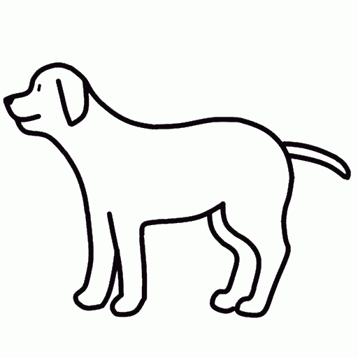

かならずお読みください→
ースワイプのつくりかたー
以前、頭をなでるといぬがよろこぶおもちゃをつくり紹介しました。
このおもちゃには、 タッチパッドに触っている位置を測る機能を追加して、どこに触っているかわかるようにつくりました。 そしてあたまやせなかなど特定の位置にさわった時に、鳴き声の音声ファイルを再生したり、画像ファイルを切り替えて、しっぽをはね上げたり、ほえたりするようにプログラムして動かしています。
今回、スワイプを作るために、これを改良して次のような仕組みを考えました。 まずタッチした瞬間の座標を計測して記憶します。続いてスライドしている間も連続して計測し、最後に指を離した寸前の座標を記憶します。そしてその直後にこれらの値を比較してスワイプの方向を判定して、それぞれの場合に決められた動作をするという仕組みです。記憶したり比較したり判定したり動作したりするなんておもしろいですね。
言葉で考えた後は式にします。
まずタッチ開始の座標を、
（startX, startY）
とします。またタッチ終了時の座標を、
（endX, endY)
とします。
このとき座標原点はモニターの左上角で、x軸は右向き正、y軸は下向きが正になります。 単位はピクセルです。
ここで、スワイプの判定は
startX > endX
なら左スワイプ、
startX < endX
なら右スワイプとなります。
基本はこれでいいのですが、このままではもし意図せずさわった時などに本人はスワイプしたつもりがないのに動作してしまうことがあり、これはユーザを非常に不快にします。 しかしみなさんご存じのように触ったつもりがないのに触ってしまうことはタッチパッドではよくあることです。
そこで定数limitを設けて、その値をこえて大きく動かした場合だけスワイプと判断するように改善を加えます。この例のようにうまくいかない場合に改善策を考えつくのも仕事を進める上で大切です。
startX ｰ endX > limitX
の場合は左スワイプ
endX ｰ startX > limitX
の場合は右スワイプ
とします。言うなる不感帯（ごく小さいスワイプは無視する）を設けると不可解な動きが抑えられ落ち着きが出てきます。落ち着きのない人はlimitの値が小さいのです。
以上のような仕組みでうまくいくでしょう。
ちなみに、NHKのEテレで耳にする『アルゴリズム』という言葉は、『こうやったらうまくいく仕組み』を表す言葉です。体操ではありません。
ここまでで作業の手順と数式の扱いが決まりました。次は具体的に実行する方法を考えます。
おもちゃですので、これらの手順が一瞬で終了しないと困ります。また何回も何回もか繰り返しても、同じ動作を間違いなく繰り返すことも大切です。 このように単純で速さと正確さが必要な仕事は人間には向いていません。こんな仕事は機械にやらせるのがいいでしょう。
このような場合は仕事をコンピュータにやらせましょう。スマホやタブレットは中身はコンピュータです。コンピュータに仕事をさせるにはプログラムが必要です。上で説明した仕組みを実現するプログラムファイルjavascript.jsを以下のように作りました。
console.log("Hello WhiteDog!");
let dir1 = 0; //方向 正面 0, 右right 1, 左left -1
let limitX =50;//不感帯の設定
let startX = null;
let endX = null;
let startY = null;
let endY = null;
// Main
window.onload = function(){
function handleMouseDown(e){//マウス押下、タッチ開始時の処理
handleMouseMove(e);
document.addEventListener("mousemove", handleMouseMove, true);
document.addEventListener("touchmove", handleMouseMove, true);
console.log("MouseDown");
var clientX, clientY;
if(e.clientX){
startX = e.clientX; startY = e.clientY;
}else if(e.changedTouches && e.changedTouches.length > 0){
var touch = e.changedTouches[e.changedTouches.length - 1];
startX = touch.clientX; startY = touch.clientY;
}else{
return;
}
console.log("start =", startX, startY);
}
document.addEventListener("mousedown", handleMouseDown, true);
document.addEventListener("touchstart", handleMouseDown, true);
function handleMouseUp(){//マウス開放、タッチ終了時の処理
document.removeEventListener("mousemove", handleMouseMove, true);
document.removeEventListener("touchmove", handleMouseMove, true);
console.log("MouseUp");
console.log("start =", startX, startY);
console.log("end =", endX, endY);
if ((startX - endX) > limitX){
console.log("left");
console.log("dir1 =", dir1);
if (dir1 == 0){
var elemdog = document.getElementById("image_dog");
elemdog.src = "./turnctol.gif";
dir1 = -1;
} else if (dir1 == 1){
var elemdog = document.getElementById("image_dog");
elemdog.src = "./turnrtoc.gif";
dir1 = 0;
setTimeout(function(){
elemdog.src = "./dogcentail.gif";
},2000);
} else {
}
}else if ((endX - startX) > limitX) {
console.log("right");
if (dir1 == 0){
var elemdog = document.getElementById("image_dog");
elemdog.src = "./turnctor.gif";
dir1 = 1;
} else if (dir1 == -1){
var elemdog = document.getElementById("image_dog");
elemdog.src = "./turnltoc.gif";
dir1 = 0;
setTimeout(function(){
elemdog.src = "./dogcentail.gif";
},2000);
} else {
}
} else {
audioElem = new Audio();
audioElem.src = "./dog2.mp3";
audioElem.play();
}
}
document.addEventListener("mouseup", handleMouseUp, true);
document.addEventListener("touchend", handleMouseUp, true);
function handleMouseMove(e){//マウス移動、タッチスライド時の処理
var clientX, clientY;
if(e.clientX){
endX = e.clientX; endY = e.clientY;
}else if(e.changedTouches && e.changedTouches.length > 0){
var touch = e.changedTouches[e.changedTouches.length - 1];
endX = touch.clientX; endY = touch.clientY;
}else{
return;
}
};
};
簡単に説明します。
1行目 コンソールにHello WhiteDog!と表します。javascript.jsの読み込みミスがあると表示しませんので正常読込の確認
2行目 犬の向きを示す変数を宣言 正面 0, 右right 1, 左left -1
4行目 不感帯の大きさを設定、50ピクセル
5-8行目 座標計測値の変数を宣言
11行 ファイルの読み込み後自動的にこれが動く
12-28行 マウス左クリックまたはタッチ開始時の処理
14-15行で83行のhandleMouseMoveを許可（計測開始）
16行 押下されたことをコンソールに表示
18-27行 座標値を計測し結果をコンソールに表示
32-28行 マウス左クリック開放またはタッチ終了時の処理
33-34行で83行のhandleMouseMoveを禁止（計測停止）
35行 開放されたことをコンソールに表示
37-38 始点終点の座標値をコンソールに表示
40-56行 左スワイプ時の処理 40行に条件式
45-46行 正面から左に向くアニメ
49-50行 右から正面に向くアニメ
52-54行 二秒後に正面を向きしっぽを振るアニメ
58-73行 右スワイプ時の処理 58行に条件式
61-62行 正面から右に向くアニメ
65-66行 左から正面に向くアニメ
68-69行 二秒後に正面を向きしっぽを振るアニメ
74-78行 スワイプが少ない時の処理
75-77行 吠える声の再生
83-93行 マウスドラッグまたはタッチスライド時の処理
84-92行 連続で座標を計測する
このプログラムでは、指で触れた位置の計測を一秒間で数十回やります。およそ人間の何百倍の速さです。
ここで昔の人が本気で自動車と競走したり、重機と力比べしたことが思い出されます。しかし自動車も重機もコンピュータも作ったのは人間、使うのも人間です。ですからプログラムを作るのは自動車運転と同様に、人間の素の力を大きく引き伸ばす便利な道具と考えていいでしょう。世の中にはスマホの召使いみたいなっている人もいるようですが、やはりスマホを召使いにして生活するほうがよほど便利ですね。
コンピュータを動かすプログラムにはいくつか種類があります。今回使用したJavaScriptという言語は、Webサイトを操作する用途で広く使われています。 上のプログラムには一部に日本語の説明がありますが、その部分以外は世界共通です。どこの国でも同じように読み、書き、つくりそして動かしています。
ちなみにいぬにも国籍？がありませんのでどこの国でも同じように吠えます。けんかもするし仲良くもします。まあこのようにいぬもプログラムも似たようなものです。
例えばこの文章も自動翻訳され外国の人に読まれているようです。 日本の人たちも海外のWebページの日本語翻訳版とは知らずに読んでいることもあります。 どうもこの人の日本語は変だなあと思ったら思い出してくださいもしかしたら自動翻訳かもしれません。（単に筆者の日本語が変なだけかもしれません）
さて上で紹介したプログラムに取りかかる前に念のため、『JavaScript スワイプ』で検索してこれまで類似の事例があるか調べてみました。（先達はあらまほしきことなり）
予想通りすでに取り組んでいる例が何件かみつかりました。そのうちの二件について 調べると両者は基本的には同じ方法を使っています。
配布サンプルを入手してテストした結果、 パソコンで使うにはブラウザの開発者ツールが必要なことがわかりました。 パソコンにスワイプはありませんからこれはこれで当然といえば当然です。
しかし
今回のおもちゃ作りはできるだけ多くの人に使いやすいように考えています。
いろいろなひとがいろいろな道具や方法でできるように遊べるようにしておきたいのでパソコンで使いにくいこの条件はこまります。
誰が悪いわけではなくすべてはこちらの事情です。結局これまでの方法を手直しして上で紹介したように作ることにしました。
また二番目のサイトのサンプルには、不感帯を追加する工夫が紹介してありましたので、この部分はありがたく頂戴しました。このように他の人のプログラムを見ると色々勉強になります。このような情報はnetに非常にたくさんありますので勉強材料には不自由しません。
今の段階ではどのやりかたいいのかはまだ判断できません。まずアイデアを形にして、使えるおもちゃの見込みをつけて、場数を踏んでから改善していけばいいと思います。
さて今回の手作りスワイプではいろいろ興味深いことも見つかりました。
例えば、
startY - endY > limitY
とすると上下方向のスワイプもできます。
これを利用すれば、左右方向は大きく動かせるが上下方向には大きく動かせないひとにもうまく適合できるかもしれません。さらに工夫すれば、ななめスワイプもうまく行くかもしれません。
また、複数のlimit値を設定して、大中小のスワイプを判別するのもいいでしょう。
このような工夫により限られた運動からより多くの情報を引き出す方法としてスワイプを見つめ直せたのも、手間をかけて手作りした成果です。
決められたマニュアルやレシピを大事にしていくのも結構ですが、その一方でこれまで見落としていた価値や可能性を見直して広げていくとりくみもしないと、いつまでたっても『失われた＊年』に終わりは来ないように思っています。
2022/05/20 公開
研究企画課リハ工学科にもどる
←もくじはこちらです